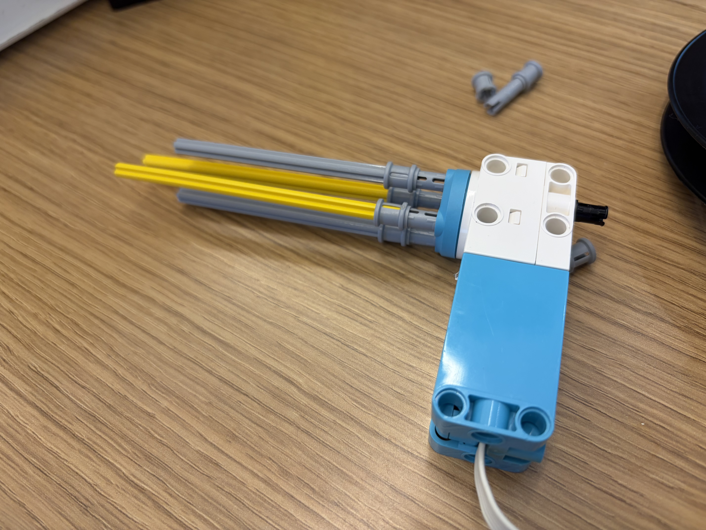

My group came up with 3 solutions to the problem of dropping scary things and have it be repeatable. We focused on the mechanism to bring the dropped thing back up. Our first idea was to put a pulley between 2 motors with wheels on them that wound the item up and down. Our second idea was putting axels on a motor to directly wind the string up on that. And our third idea was more for fun, we attatched the other side of the string to a car thing that could be desguised as a spider or something to pull the string. I don't have a picture of the first idea.